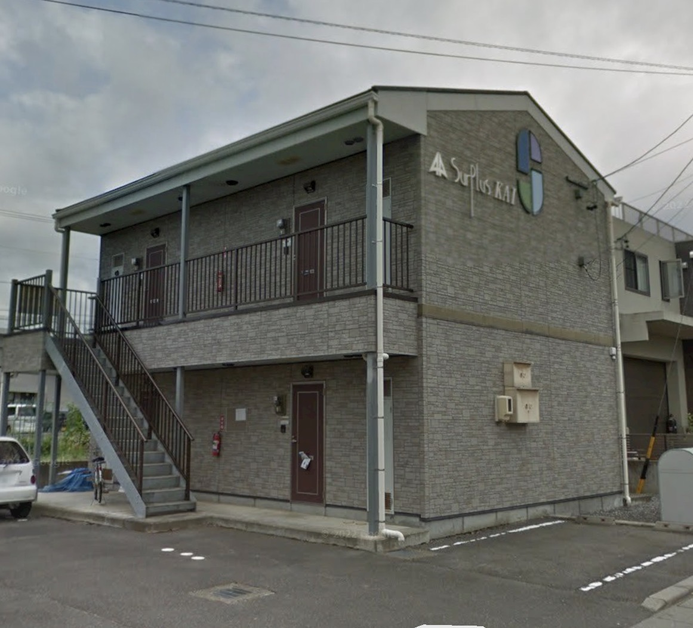

SURPLUS KAI
暮らしに、
ちょうどいい。
落ち着いた住環境で、
快適な毎日を。
A COMFORTABLE PLACE
FOR YOUR NEW LIFE.
FOR YOUR NEW LIFE.
⌂
快適な住空間シンプルで暮らしやすい間取りと設備
⌖
便利な立地生活施設が揃う暮らしやすいエリア
♧
落ち着いた環境静かで安心できる住環境
▣
駐車スペースお車での生活にも対応
ABOUT
日々の暮らしを、
穏やかに包む住まい。
サープラス カイは、毎日の生活に寄り添う住まいです。
このサイトでは、物件の基本的なご紹介をしています。室内写真や設備写真は、今後必要に応じて追加・差し替えできます。
ROOM
ROOM居室
EQUIPMENT
EQUIPMENT設備

GALLERY外観
※ ROOM・EQUIPMENTは現在仮表示です。写真は後から差し替え可能です。
SURPLUS KAI
この街で、
新しい暮らしをはじめませんか。
暮らしやすさが、ここにあります。
お問い合わせ
ご興味のある方は、お問い合わせ内容に応じてご案内いたします。
所在地
長野県塩尻市大字広丘吉田3304番地
サープラス カイ